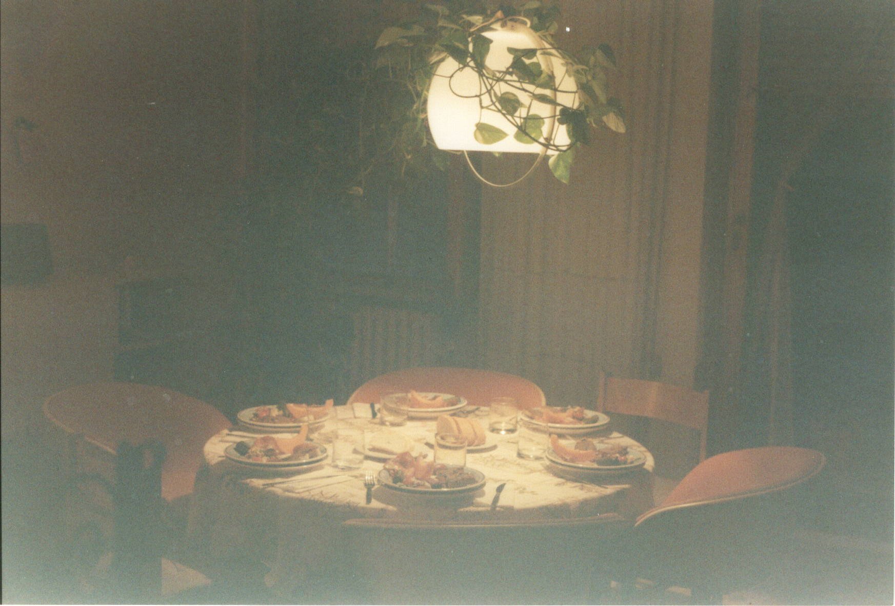
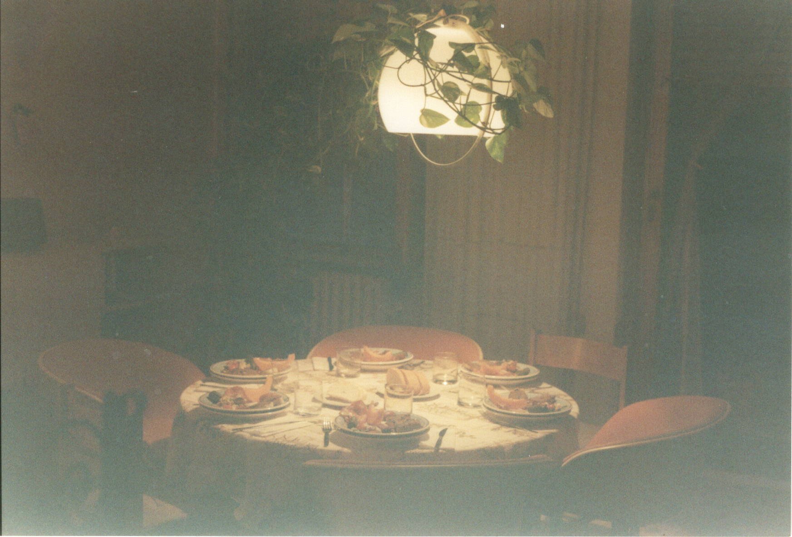
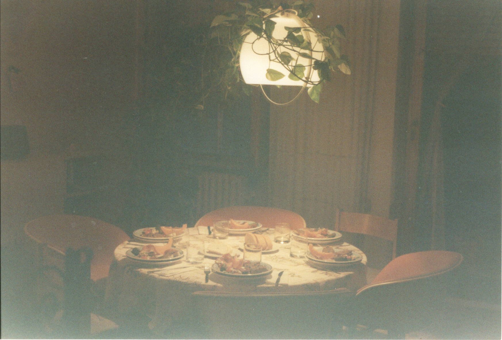
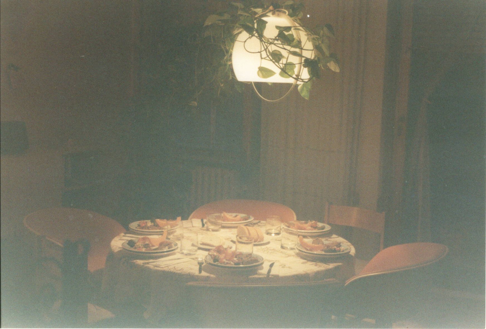

Using my Canon AE-1 camera, I have experimented in casual 35mm film photography. I enjoy the use of expired film-the results are often not what I anticipate and the excitement of their development is incredibly appealing.
 



 
